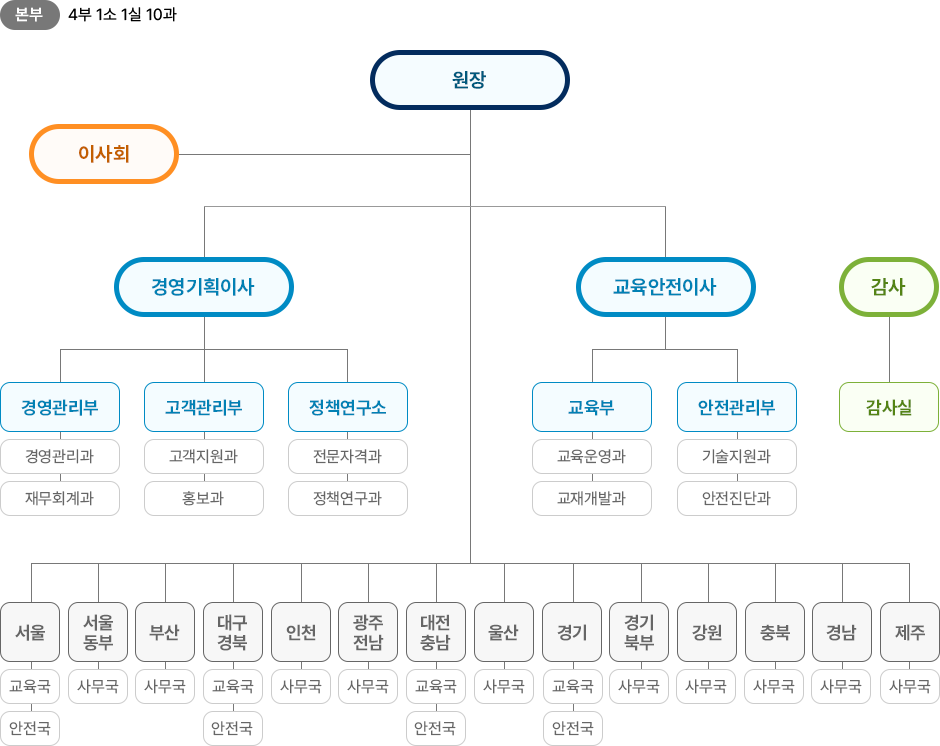
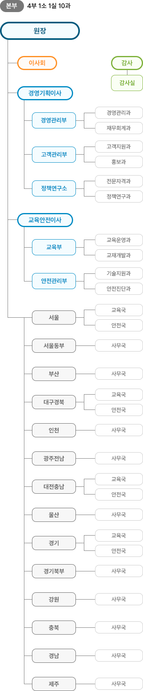

원장 인사말
원장 인사말
조직안내
조직도
부서별 연락처
부서별 업무소개
연혁
홈
안전원소개
원장 인사말
조직안내
조직도
조직도


본부
4부 1소 1실 10과
원장
이사회
경영기획이사
경영관리부
경영관리과
재무회계과
고객관리부
고객지원과
홍보과
정책연구소
전문자격과
정책연구과
교육안전이사
교육부
교육운영과
교재개발과
안전관리부
기술지원과
안전진단과
감사
감사실
지역 지사
서울
교육국
안전국
서울동부
사무국
부산
사무국
대구경북
교육국
사무국
인천
사무국
광주전남
사무국
대전충남
교육국
사무국
울산
사무국
경기
교육국
사무국
경북
사무국
강원
사무국
충북
사무국
전북
사무국
경남
사무국
제주
사무국